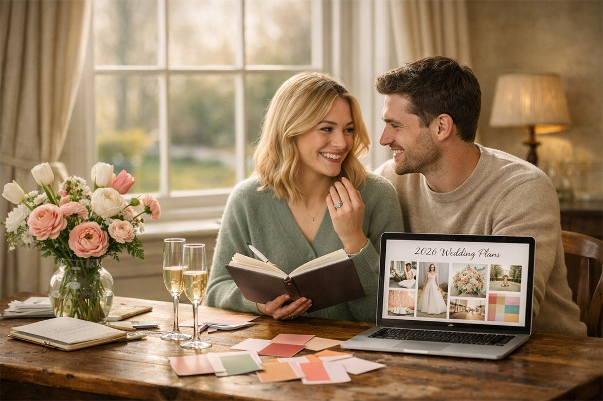

March 2026Your Practical Follow-Up Guide for Wedding Planning
March 2026 is the perfect moment—spring energy is in the air, wedding fairs are popping up everywhere, and 2026/2027 dates still have great availability. Here’s a gentle, follow-up guide with fresh tips, current trends to inspire you, and actionable steps to keep the momentum joyful (not overwhelming).
“Turning big wedding dreams into thoughtful, joyful decisions.”
1. Revisit Your Vision – Make It Even More “You”
In our last chat, we talked about aligning on vibe as a couple. Now dig deeper: What moments matter most? A quiet sunrise ceremony? A lively after-party? 2026 trends scream intentionality—weddings that feel authentically yours, not Pinterest-perfect copies.
Hyper-personal touches are huge: Bespoke vows, audio guest books, storytelling elements (e.g., a short video montage of your journey played during speeches), or custom playlists that nod to shared memories.
Guest experience focus: Couples are prioritising how loved ones feel—interactive entertainment, morning-of breakfasts together, or “deliberately messy” after-parties for real connection.
Pro tip: Create a shared digital mood board (Pinterest or Canva) with 5–10 images that capture your “why.” It helps when chatting with venues or suppliers.
2. Hit a Wedding Fair or Open Day This Month
Nothing beats seeing things in person! March is fair season—perfect for inspiration without commitment.
Upcoming highlights (as of early March 2026):
- The Big Bournemouth (Bomo) Wedding Show (7–8 March) – Great for south coast vibes.
- LOVE&LUXE at Rudding Park (8 March) – Luxury focus, stunning venue tours.
- Cambridge Luxury Wedding Fair (22 March) – High-end suppliers and styling demos.
- London Wedding Show (29 March at Business Design Centre) – Massive, with bold trends on display.
Others: Tudor Barn, Ware Priory, Luton Hoo Conservatory shows around mid-March.
Go with an open mind—chat to suppliers, collect cards, snap photos of setups that excite you. Many offer discounts or priority booking for attendees. Tip: Bring your mood board and ask “How can we make this personal?”
3. Lock In Key Priorities (While Trends Inspire, Not Dictate)
Trends for 2026 are exciting but optional—choose what resonates.
- Bold & expressive styling: Vibrant sunset palettes, sculptural florals, maximalist tables, retro-modern cakes.
- Fashion fun: Basque waists, bubble hems, Bridgerton-inspired details, colourful suits, second looks for evening.
- Immersive & multi-day: Weekend celebrations, mid-afternoon ceremonies for golden light, festival-like elements.
- Sustainability & low-key luxury: Eco choices as standard (seasonal flowers, local food), whispered elegance over flash.
- Outdoor freedoms: With law changes progressing, more options for beaches, gardens, woodlands.
Don’t chase everything—pick 2–3 that feel like “us.” Advice: If a trend doesn’t excite you both, skip it. Your day should feel meaningful, not trendy.
4. Quick Wins for the Next 4–6 Weeks
- Book venue visits/open days (many happening now—prioritise your top 3–5 from research).
- Shortlist photographers/videographers (they book fast—check portfolios for storytelling style).
- Start dress/suit browsing (appointments fill up; aim for spring/summer slots).
- Finalise rough guest list and budget tweaks.
- Download a planning app (Hitched, Bridebook) for checklists and vendor tracking.
Remember: It’s okay to move slowly. The best weddings come from thoughtful choices, not rushed ones.
You’re in the sweetest part of the journey—dreaming big while everything’s still possible. On platforms like VenuesAndVendors.co.uk, browse venues and suppliers that match your vision—filter by style, location, or trends for easy inspiration and direct contacts.
What’s sparking joy for you right now—a bold colour palette, a multi-day weekend idea, or hitting a fair? Share in the comments or dive into some browsing today. You’ve got this! 🥂🌸